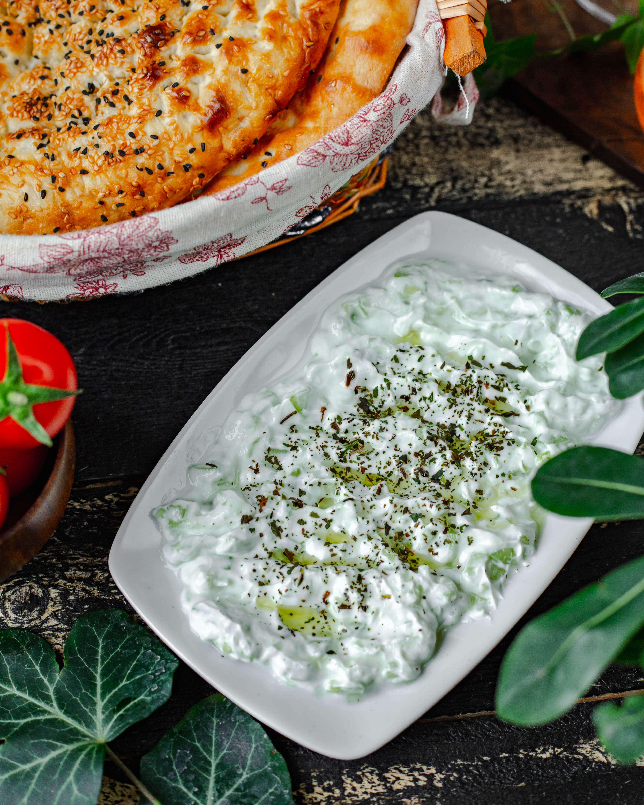

The Spinach Dip
Home Page

Description
My dad's spinach dip recipe.
The entire family loves this flavorful spinach mixture served in a tasty bread bowl.
Your family will love it, too.
Ingridients
- 1 (16 ounce) container sour cream
- 0.5 (10 ounce) package frozen chopped spinach, thawed and drained
- 1 (4 ounce) can water chestnuts, drained and chopped
- 1 (1.8 ounce) package dry vegetable soup mix
- 1 (1 pound) loaf round sourdough bread
Steps
- Gather all ingredients.
- Mix sour cream, mayonnaise, spinach, water chestnuts, and dry soup mix together in a medium bowl. Chill in the refrigerator 6 hours, or overnight.
- Slice off the top of the sourdough round and pull out the soft interior, leaving a sturdy bread bowl.
- Fill with spinach mixture. Tear removed bread chunks into pieces for dipping.
Total Time
6 hrs 15 mins